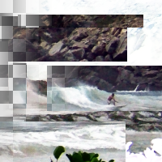

Paper Tile
Cut image into paper tiles, and slide them
Tile Width
Width of the tile
name: tile-width
type: int
default: 155
minimum: 1
maximum: +inf
ui-minimum: 1
ui-maximum: 1500
ui-gamma: 1.00
ui-step-small: 1
ui-step-big: 100
unit:pixel-distance
axis:x
Tile Height
Height of the tile
name: tile-height
type: int
default: 56
minimum: 1
maximum: +inf
ui-minimum: 1
ui-maximum: 1500
ui-gamma: 1.00
ui-step-small: 1
ui-step-big: 100
unit:pixel-distance
axis:y
Move rate
Move rate
name: move-rate
type: double
default: 25.00
minimum: 1.00
maximum: 100.00
ui-minimum: 1.00
ui-maximum: 100.00
ui-gamma: 1.00
ui-step-small: 1.00
ui-step-big: 10.00
ui-digits: 2
unit:percent
Wrap around
Wrap the fractional tiles
name: wrap-around
type: boolean
default: False
Fractional type
Fractional Type
name: fractional-type
type: enum
Centering
Centering of the tiles
name: centering
type: boolean
default: True
Background type
Background type
name: background-type
type: enum
Background color
The tiles' background color
name: bg-color
type: color
default: rgb(0.0000, 0.0000, 0.0000)
visible:background-type {color}
role:color-primary
Random seed
name: seed
type: seed
default: 0
minimum: 0
maximum: +inf
pads: input output
parent-class: GeglOperationFilter
categories: artistic map
source: operations/common-gpl3+/tile-paper.c
position-dependent: true
license: GPL3+
 This page is part of the online GEGL Documentation, GEGL is a data flow based image processing library/framework, made to fuel GIMPs high-bit depth non-destructive editing future.
This page is part of the online GEGL Documentation, GEGL is a data flow based image processing library/framework, made to fuel GIMPs high-bit depth non-destructive editing future.